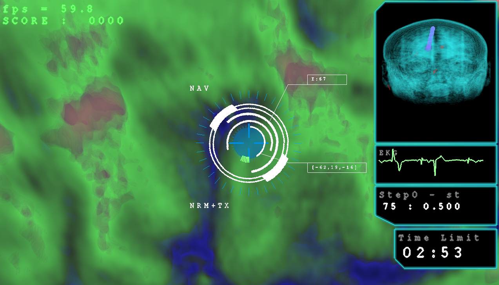
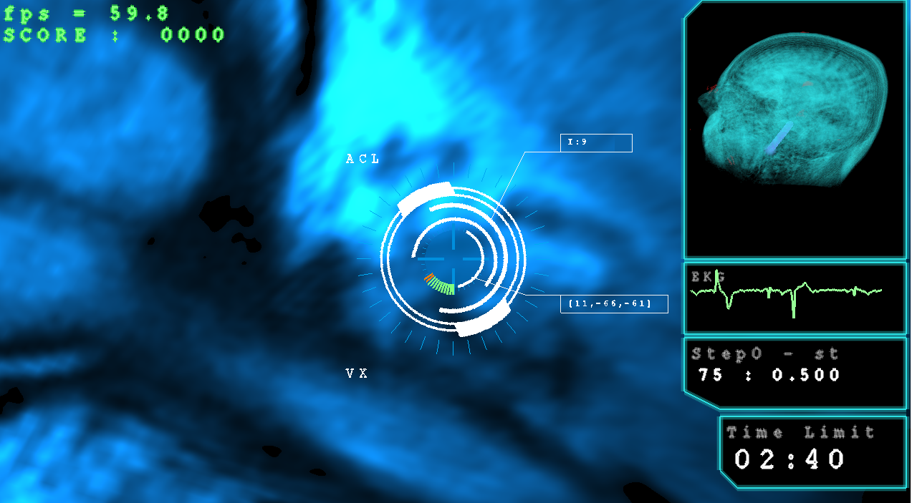
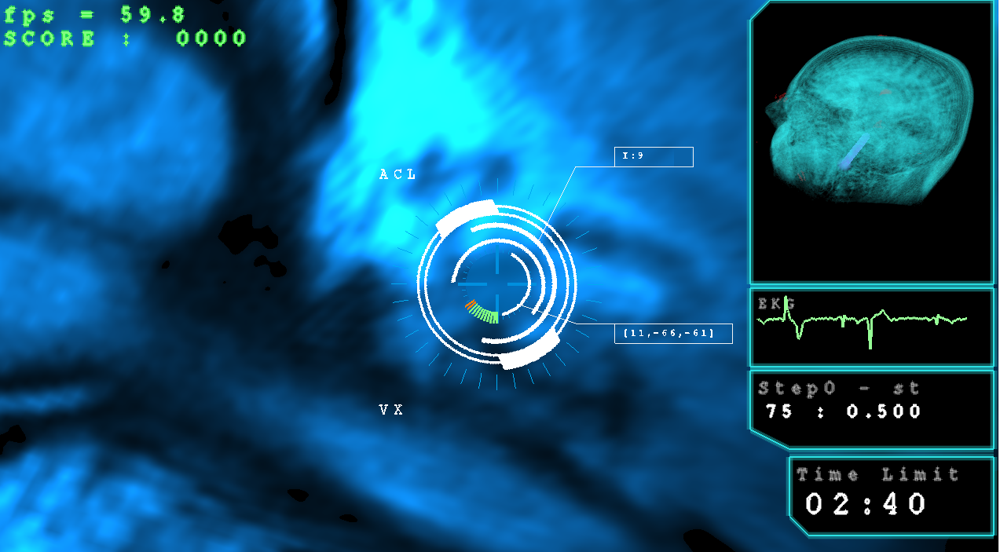

VExplore
VExplore es un videojuego de exploración en 3D en tiempo real, donde el jugador se encuentra inmerso dentro de una imagen medica real, (ej. tomada con un MRI) y con comandos del mouse y del teclado puede navegar por el volumen.
Dentro del volumen aparecen unas "anomalías" de color rojo, que son agregadas en forma aleatorea al comenzar el juego. El objetivo del jugador es encontrar las anomalías y destruirlas con un comando del teclado.
El juego tiene diferentes modos de navegacion (acelarando o movimiento simple), y distintos filtros de visualización. El modo Filtro resalta en distintos colores diferentes partes del tejido.

Y el modo de vision X aplica una función especial de transferencia para resaltar ciertas partes del tejido, dandole mas constraste y brillo a algunas partes.
 
